(Very Easy) 1 2 3 4 5 (Very Difficult)

(Very Easy) 1 2 3 4 5 (Very Difficult)

(Very Easy) 1 2 3 4 5 (Very Difficult)

Philip Johnson
Collaborative Software Development Laboratory
Department of Information and Computer Sciences
University of Hawaii
johnson@hawaii.edu
CSDL-07-02
http://csdl.ics.hawaii.edu/techreports/07-02/07-02.html
Last update: 12/22/2006 12:42:26 PM
This report presents the results from a classroom evaluation of Hackystat by ICS 413 and ICS 613 students at the end of Fall, 2006. The students had used Hackystat-UH for approximately six weeks at the time of the evaluation. The survey requests their feedback regarding the installation, configuration, overhead of use, usability, utility, and future use of the Hackystat-UH configuration. This classroom evaluation is a semi-replication of an evaluation performed on Hackystat by ICS 413 and 613 students at the end of Fall, 2003, which is reported in Results from the 2003 Classroom Evaluation of Hackystat-UH. As the Hackystat system has changed significantly since 2003, some of the evaluation questions were changed.
The data from this evaluation, in combination with the data from the 2003 evaluation, provides an interesting perspective on the past, present, and possible future of Hackystat. Hackystat has increased significantly in functionality since 2003, which has enabled the 2006 classroom usage to more closely reflect industrial application, and which has resulted in significantly less overhead with respect to client-side installation. On the other hand, results appear to indicate that this increase in functionality has resulted in a decrease in the usability and utility of the system, primarily due to inadequacies in the server-side user interface. Based upon the data, this report proposes a set of user interface enhancements to address the problems raised by the students, including Ajax-based menus and parameters, workflow based organization of the user interface, real-time display for ongoing project monitoring, annotations, and simplified data exploration facilities.
At the end of the Fall 2006 semester, the students in ICS 413 and ICS 613 were contacted by email and asked to respond to the following questionnaire soliciting their opinions regarding the Hackystat-UH configuration. Response was optional, but the students were offered extra credit points for providing their opinions. The students were asked to reply within five days. Fourteen out of the fifteen students contacted provided responses.
The complete questionnaire follows:
In order to better understand the strengths and weaknesses of the current version of Hackystat, and to help guide future improvements, please take a few minutes to answer the following questions. Your identity will be removed before performing any analysis on this data. There are no right or wrong answers: we want to know what your personal experience was. Most questions ask you to respond with a number from 1 to 5, where 1 indicates the "best" and 5 indicates the "worst". The last question of each section requests your comments as the response.
I. INSTALLATION/CONFIGURATION
Please provide me with your opinions regarding the installation of
Hackystat sensors and configuration of the Hackystat server.
1. Installing the Eclipse IDE sensor was:
(Very Easy) 1 2 3 4 5 (Very Difficult)
2. Installing the Ant sensors (JUnit, SCLC, Emma, etc.) were:
(Very Easy) 1 2 3 4 5 (Very Difficult)
3. Configuring Hackystat to track our team's work
(i.e. defining the project, and configuring the workspace roots) was:
(Very Easy) 1 2 3 4 5 (Very Difficult)
4. Please provide any feedback you can on the problems you experienced
during sensor installation and server configuration, as well as any
suggestions you have to make this easier in future.
II. OVERHEAD OF USE
In this section, I am interested in learning about the "overhead" you
experienced with Hackystat--in other words, how much work was required
after installation and configuration to gather data and perform analyses:
5. The amount of overhead required to collect Hackystat data was:
(Very Low) 1 2 3 4 5 (Very High)
6. The amount of overhead required to run Hackystat analyses was:
(Very Low) 1 2 3 4 5 (Very High)
7. Please provide any feedback you can on Hackystat overhead after
installation and configuration, as well as any suggestions you have to
reduce the overhead more in future.
III. USABILITY and UTILITY
This section asks for your opinion on the usability and utility of the
primary analyses used to track your progress. I define "usability" to mean the
ease of invoking an analysis and understanding what the results mean. I
define "utility" to mean the usefulness of the analysis; does the analysis
provide information that is actually helpful to you.
8. The TraffoMeterReport telemetry analysis (showing trends in project/process data) was:
(Highly Usable) 1 2 3 4 5 (Not Usable At All)
(Highly Useful) 1 2 3 4 5 (Not Useful At All)
9. The DailyProjectDetails report (showing a single day's process/project data) was:
(Highly Usable) 1 2 3 4 5 (Not Usable At All)
(Highly Useful) 1 2 3 4 5 (Not Useful At All)
10. Please provide any other feedback you can on the usability and utility
of these or other Hackystat analyses, as well as any suggestions you
have on how we can improve usability and utility in future.
IV. FUTURE USE
In this section, I am interested in learning whether you would consider
Hackystat to be feasible (i.e. appropriate, useful, beneficial) for use in a
professional software development context.
11. If I was a professional software developer, using Hackystat at my job would be:
(Very Feasible) 1 2 3 4 5 (Not Feasible at All)
12. Please provide any other feedback you can on the feasibility of
Hackystat in a professional setting, as well as any suggestions you
have on how I could improve its feasibility in future.
Sections I, II, and IV were virtually unchanged from the 2003 evaluation. Section III was changed to reflect the analyses used by students in this semester (the TraffoMeter and DailyProjectDetails reports).
This section presents the responses from the respondents to each of the questions. For the "short answer" questions, I corrected misspellings and minor grammatical errors to improve readability.
Please provide us with your opinions regarding the installation of Hackystat sensors and configuration of the Hackystat server.
| Question | Response |
| 1. Installing the Eclipse IDE sensor was: (Very Easy) 1 2 3 4 5 (Very Difficult) |
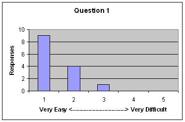 |
| 2. Installing the Ant sensors (JUnit, SCLC,
Emma, etc.) were: (Very Easy) 1 2 3 4 5 (Very Difficult) |
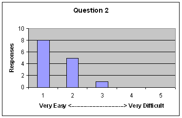 |
| 3. Configuring Hackystat to track our team's
work (i.e. defining the project, and configuring the workspace roots) was: (Very Easy) 1 2 3 4 5 (Very Difficult) |
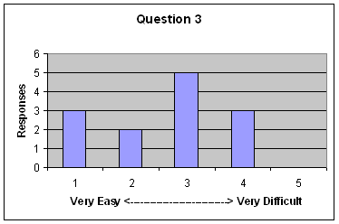 |
4. Please provide any feedback you can on the problems you experienced during sensor installation and server configuration, as well as any suggestions you have to make this easier in future.
In this section, we are interested in learning about the "overhead" you experienced with Hackystat--in other words, how much work was required after installation and configuration to gather data and perform analyses:
| Question | Response |
| 5. The amount of overhead required to collect Hackystat data
was: (Very Low) 1 2 3 4 5 (Very High) |
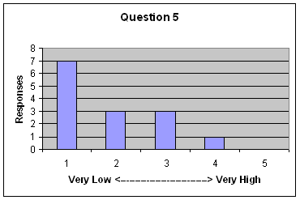 |
| 6. The amount of overhead required to run Hackystat analyses
was: (Very Low) 1 2 3 4 5 (Very High) |
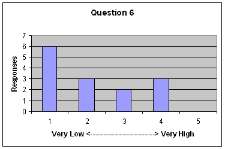 |
7. Please provide any feedback you can on Hackystat overhead after installation and configuration, as well as any suggestions you have to reduce the overhead more in future.
This section asks for your opinion on the usability and utility of the three primary analyses used by Hackystat. We define "usability" to mean the ease of invoking an analysis and understanding what the results mean. We define "utility" to mean the usefulness of the analysis; does the analysis provide information that is actually helpful to you.
| Question | Response |
| 8. The TraffoMeterReport telemetry analysis
(showing trends in project/process data) was: (Highly Usable) 1 2 3 4 5 (Not Usable At All) (Highly Useful) 1 2 3 4 5 (Not Useful At All) |
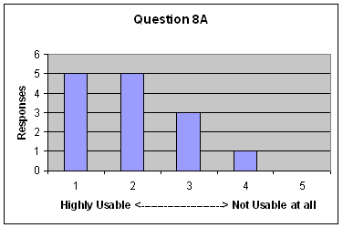
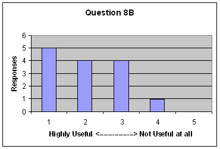 |
| 9. The DailyProjectDetails report (showing a
single day's process/project data) was: (Highly Usable) 1 2 3 4 5 (Not Usable At All) (Highly Useful) 1 2 3 4 5 (Not Useful At All) |
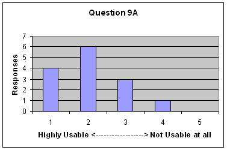
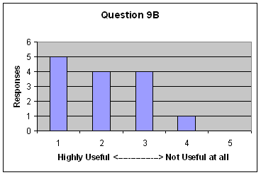
|
11. Please provide any other feedback you can on the usability and utility of Hackystat analyses, as well as any suggestions you have on how we can improve usability and utility in future.
In this section, we are interested in learning whether you would consider Hackystat to be feasible (i.e. appropriate, useful, beneficial) for use in a professional software development context.
| Question | Response |
| 12. If I was a professional software developer, using
Hackystat at my job would be: (Very Feasible) 1 2 3 4 5 (Not Feasible at All) |
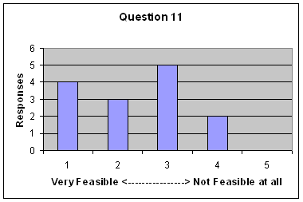 |
13. Please provide any other feedback you can on the feasibility of Hackystat in a professional setting, as well as any suggestions you have on how we could improve its feasibility in future.
Before drawing any conclusions from this data, it is important to recognize the limitations of this study, which are quite similar to the limitations associated with the 2003 study.
First, this data is drawn from a limited sample size of 14 students in software engineering classes at the University of Hawaii. The subjects therefore have a relatively narrow and homogeneous background in software development.
Second, the context in which they used the system was a course project. Course projects tend to be smaller, narrower in scope, and with less pressure on the developers than an industrial context. It is one thing to get a poor grade for doing a poor job, it is another thing to lose your job for doing a poor job. In addition, students are not working full-time on the system; the development project is just one assignment among several.
Third, the administration of the questionnaire was performed by the designer of the system under study, who was also the instructor for the class. In addition, responses were not provided anonymously, but rather emailed back to the instructor/designer. This raises the question of whether the responses are biased, either consciously or unconsciously, in order to "please" the instructor/designer who would presumably be gratified by positive responses to the questionnaire.
These are all major limitations on the external validity of the responses. They do not make the results meaningless, but rather help provide a perspective on how to gain additional evidence in future that would confirm/disconfirm these initial findings. For example, it would be helpful to deploy Hackystat-UH in a classroom setting in another University, and then gather data anonymously from the participants using someone other than the instructor in order to avoid the potential for bias present in this study. Other insights into future research directions will be covered in an upcoming section.
The data from this section indicates that client-side sensors were easy to install, with the exception of the Subversion sensor, but that configuration on the server side (particularly of the Workspaces) was more difficult.
Our principal conclusion is that the hackyInstaller GUI has made sensor installation relatively straightforward, but that project and workspace configuration is still difficult.
The data from this section indicates that the overhead of use was small to very small for most of the users. The comments indicate that the complexity of the user interface on the server side was a primary contributor to overhead. Students also indicated that an automated daily build mechanism would be useful to eliminate the need to manually invoke certain sensors (such as the size counting sensor or the SVN sensor) on a daily basis.
Our principal conclusion is the server-side user interface is the most significant contributor to the overhead of use.
Recall that the survey defined "usability" to mean the ease of invoking an analysis and understanding what the results mean. The survey defined "utility" to mean the usefulness of the analysis: does the analysis provide information that is actually helpful to you. Although the Hackystat-UH configuration actually provides many analyses, there were only two analyses that were actively discussed in class and which the students were expected to use. These two analyses were the subject of the questions in this section.
Numerically, the two analyses scored well with respect to both usability and utility. The comments indicate that the user interface continues to be a barrier, and that further support in interpreting the data would be helpful.
The numerical data indicates that most students think Hackystat would be at least somewhat feasible in a professional setting. A variety of concerns were raised: privacy concerns, the difficulty in interpreting the metrics, and the complexity of the user interface were all viewed as obstacles to professional adoption.
To usefully compare the data from 2003 to the data from 2006, it is necessary to understand the changes that have been made to the Hackystat system in the past three years.
First, the number of sensors, tools, and metrics used by the students has grown significantly since 2003. In 2003, they collected four distinct measures from four tools: Active Time (from Eclipse), Unit Tests (from JUnit), Coverage (from JBlanket), and size (from LOCC). In 2006, three additional measures and five additional tools were added: Build (from Ant), Commit (from Subversion), and Code Issues (from PMD, Checkstyle, and FindBugs). Thus, in 2006 they collected a total of seven distinct measures from nine tools. In addition, the "ActiveTime" measure was replaced by the more sophisticated "DevTime" measure, which more accurately tracked developer effort than ActiveTime by utilizing data collected from multiple tools.
Second, the analyses used by students has changed since 2003. In 2003, the system was oriented around a set of "Course" analyses that were tailored to an educational setting. These analyses presented summaries of the individual team project metric data to-date in tabular form, and also presented comparisons of all of the course projects. The data from 2003 indicated mixed results for these course analyses with respect to utility and usability. In 2006, the Software Project Telemetry system was used to present the data. This interface is somewhat more complicated to use and interpret, but is also a more general interface that would be equally applicable to an industrial setting.
Third, in 2003 the students had to manually install the sensors. In 2006, they used hackyInstaller, a GUI system that we implemented to simplify client-side installation.
Fourth, in 2003, the principal analysis provided a tabular representation of "to date" values for one or more of the course projects, as illustrated below:
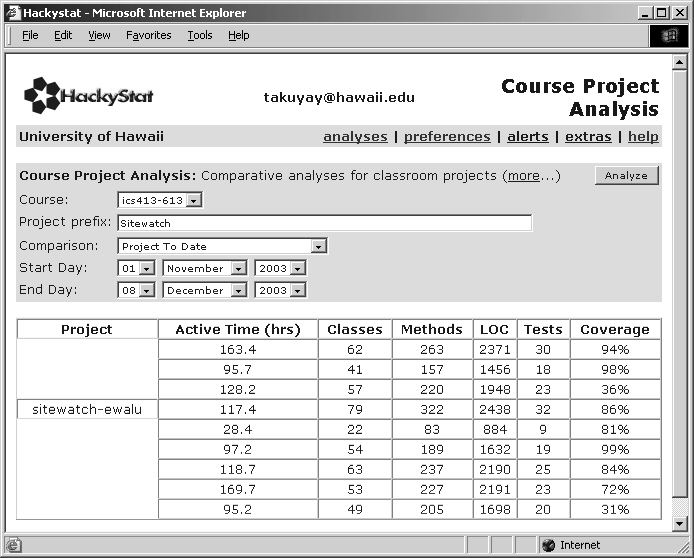
In 2006, the principal analysis was based upon software project telemetry, which would show trends over time. The following image shows one of approximately a dozen different charts that the students would use to analyze and interpret their collected data:
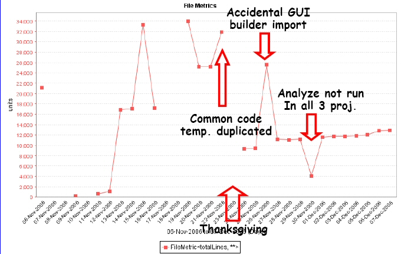
This screenshot was extracted from a Powerpoint presentation from a group to the class. Note how this group annotated the image with information to help explain changes in metric values. The telemetry analysis contains much more information than the "snapshot" course analysis, but is also significantly more difficult to interpret.
The next section presents a comparison of the histogram data from 2003 to the histogram data from 2006. At this time, no statistical tests for significant difference have been performed. Thus, any differences claimed between the data sets based upon the "shape" of the histograms are tentative and await statistical confirmation.
| Question | 2003 Response | 2006 Response |
| 1. Installing the Eclipse IDE sensor was: (Very Easy) 1 2 3 4 5 (Very Difficult) |
|
|
| 2. Installing the Ant sensors (JUnit, SCLC,
Emma, etc.) were: (Very Easy) 1 2 3 4 5 (Very Difficult) |
|
|
| 3. Configuring Hackystat to track our team's
work (i.e. defining the project, and configuring the workspace roots) was: (Very Easy) 1 2 3 4 5 (Very Difficult) |
|
The empirical data indicates little change in student opinion regarding Eclipse sensor installation. On the other hand, the data appears to indicate that Ant sensor installation is easier than it was in 2003. Finally, it appears to indicate that server-side configuration has actually gotten harder since 2003.
| Question | 2003 Response | 2006 Response |
| 5. The amount of overhead required to collect Hackystat data
was: (Very Low) 1 2 3 4 5 (Very High) |
 |
|
| 6. The amount of overhead required to run Hackystat analyses
was: (Very Low) 1 2 3 4 5 (Very High) |
 |
The empirical data seems to indicate that, while still low, the overhead of use of Hackystat has increased to some extent since 2003.
The data from this section is difficult to compare, since the 2003 system used different analyses than in 2006. For illustrative purposes, we will show one analysis from 2003 and one from 2006:
| Questions | 2003 (Course Project analysis) | 2006 Response (TraffoMeter Report Analysis) |
| 2003: The Course Project Analysis (showing a comparison of
project data between all of the SiteWatch projects) was: (Highly Usable) 1 2 3 4 5 (Not Usable At All) (Highly Useful) 1 2 3 4 5 (Not Useful At All)
2006:. The TraffoMeterReport telemetry analysis
(showing trends in project/process data) was: |

|
At least when comparing these two analyses to each other, the data seems to indicate that usability might have decreased slightly, while utility (usefulness) might have increased slightly.
| Question | 2003 Response | 2006 Response |
| 12. If I was a professional software developer, using
Hackystat at my job would be: (Very Feasible) 1 2 3 4 5 (Not Feasible at All) |

|
The empirical data seems to indicate that student feelings toward "professional feasibility" seem to have dropped a bit since 2003.
The comparison of the data from 2003 to 2006 is extremely instructive, in light of the changes that occurred in the system since 2003. I was quite excited to introduce Hackystat to my software engineering classes in 2006, because I felt that a much broader range of data could now be collected, and that the availability of HackyInstaller would enable the installation of sensors for this data with lower overhead. I was also excited to transition students away from a classroom-specific set of analyses and into Telemetry-based analyses, which would correspond more directly to the kind of analyses that they would be able to use in a professional setting.
What the data reveals is that the increase in capability of the system since 2003 has come at the cost of a decrease in usability. In 2003, the customized nature of the analyses, and the relatively small number of different measures and tools appeared to ease the understanding and interpretation of the data by the students. In 2006, the increase in the range of data and the more general nature of the analyses caused some students to feel frustrated by the lack of guidance in data interpretation. In 2003, no sensor data was collected from the configuration management tool, and thus no students were required to set up the usermaps file. In 2006, they were required to manage this sensor installation by themselves, which added new overhead to the installation and daily collection activities.
In 2003, the empirical data and the associated comments indicated that a major obstacle to the adoption and use of Hackystat was the lack of support for client-side sensor installation. In 2006, the data indicates that the availability of HackyInstaller appears to have addressed that obstacle. However, the data from 2006 indicates that the current most significant obstacle to the adoption and use of Hackystat is the server-side user interface, which introduces difficulties with respect to configuration, display, and interpretation of the collected data.
The next section presents some preliminary proposals for user interface improvements intended to address the issues revealed by this study.
As the previous section indicates, the current server-side user interface appears to create significant barriers to the usability and utility of Hackystat. Here are some preliminary proposals for a "next generation" Hackystat interface that might address some of the problems that have been identified.
Several students reported problems with the form-based interface to Hackystat commands, including:
Many of these kinds of problems could be avoided by moving to an "Ajax" based interface. In this style of interface, selections could be communicated to the server immediately, avoiding the need to explicitly "store" them. Once a chart or report is selected, this information can be communicated to the server immediately and used to generate context-specific input for the appropriate parameters. Finally, once a project is selected, this information can be communicated to the server and used to generate date input selectors that are specific to the range of dates appropriate for the Project.
A significant usability problem with the current interface is the organization of the Hackystat commands into the "Analyses", "Preferences", "Alerts", "Extras", and "Help" pages, requiring users to move back and forth among several different pages, invoking different commands at different times to accomplish various tasks. An alternative approach would be based upon "workflow", and organize the user interface according to a particular task, such as:
Depending upon the workflow task indicated by the user, the interface could dynamically generate the set of commands required to deal with that task.
After initial setup of sensors and project definitions, the next type of workflow for a user is ongoing project monitoring. Project monitoring involves two principle activities: (1) performing telemetry-based (or other) project analyses to monitor project productivity and quality, and (2) ensuring that sensor data is being generated, sent to the server, and associated with the project correctly.
An improved user interface to accomplish this workflow task might consist of a Project-specific "Home Page" which would group together a set of charts showing the telemetry data appropriate to that project, along with "sensor validation" information. This could show, for example, whether or not sensor data of a given type was sent by a given project member for the past several days. In addition, the page could display a scrolling window updated in real-time with information about sensor data received by the current user (and/or other members of this project) at the server.
Currently, project monitoring activities requires manually invoking various commands located on different pages of the server. The current interface makes it not only difficult to understand how to accomplish project monitoring tasks, but quite tedious even when understanding has been obtained. A much better solution might be the proposed user interface which provides "live", "real time" information about sensor data transmission to the server along with "current" charts, all grouped together on a single Home Page.
Correct interpretation of the empirical data often requires supplemental information about events occurring during project development. The FileMetrics telemetry chart presented in the Powerpoint presentation shown in Section 5.1 illustrates one way to effectively use annotations. The TimeLine project <http://simile.mit.edu/timeline/> shows another way to incorporate annotations.
One way to facilitate the interpretation of the data would be to enable group members to attach annotations to the data that would appear in reports.
In 2003, providing new forms of data analysis in Hackystat was extremely complex and time-consuming, since it involved designing and implementing a new user interface command. This was clearly beyond the realm of possibility for students in the course. In 2006, we made significant improvements to support for data exploration through the creation of the Software Project Telemetry language, which enables users to define new Charts and Reports without extending the user interface. However, the telemetry language was not discussed in the course, and with only one or two exceptions, students relied upon the "shrinkwrapped" data analyses provided by the TraffoMeter Telemetry Report.
An intriguing question is whether there are simpler alternatives to the Software Project Telemetry language for supporting data exploration in Hackystat. For example, the Swivel web site <http://www.swivel.com/> provides a public repository for data along with high level primitives for simple juxtaposition of data series. Could similar user interface techniques be adapted to Hackystat in order to enable students to explore their data sets? If so, would students actually take advantage of the opportunity? Finally, would this create interpretation issues involving the fact that correlation does not imply causation, or in the worst case leading some students to believe that correlation is causation?
If you have any other thoughts or inspirations upon reading this technical report, please don't hesitate to send me email at johnson@hawaii.edu.